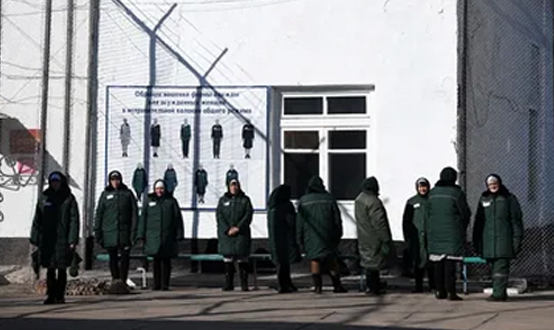

Помимо хищений разного вида, в категории преступлений против собственности выделяют деяния, не связанные с хищением, либо в целом не имеющие корыстных целей.
Корыстные преступления против собственности, не связанные с хищением
1) Вымогательство – ст. 163 УК. Объективная сторона состоит в требовании виновного передать ему имущество или право на имущество либо совершить действия имущественного характера (например, бесплатно выполнить работы или оказать услуги, подлежащие оплате, — строительные, ремонтных т.д.), сопровождающемся угрозой определенного содержания. Угроза представляет собой психическое воздействие на потерпевшего, направленное на понуждение последнего к совершению желаемых для виновного действий. Угроза должна быть действительной и реальной и касаться применения насилия любой интенсивности и степени тяжести вплоть до угрозы убийством, уничтожения или повреждения чужого имущества либо распространения сведений, позорящих потерпевшего или его близких, либо иных сведений, которые могут причинить существенный вред правам или законным интересам потерпевшего или его близких (например, подорвать их репутацию, уронить авторитет, внести разлад в семью). Субъективная сторона вымогательства характеризуется виной в виде прямого умысла и корыстной целью. Субъект — физическое вменяемое лицо, достигшее 14 лет. Вымогательство с применением насилия как средства подкрепления угрозы является одним из квалифицирующих признаков деяния.
2) Причинение имущественного ущерба путем обмана или злоупотребления доверием – ст. 165 УК. Объективная сторона состоит в причинении имущественного ущерба собственнику или иному владельцу имущества путем обмана или злоупотребления доверием при отсутствии признаков хищения. Имущество, денежные средства не изымаются из фондов собственника, как это происходит при хищении, а не поступают в них в результате противоправного деяния виновного, т.е. являются упущенной выгодой. Например, водитель автобуса присваивает плату за проезд, собранную с пассажиров. Субъективная сторона преступления — вина в виде прямого умысла и корыстная цель. Субъект преступления — физическое вменяемое лицо, достигшее 16 лет.
3) Неправомерное завладение автомобилем, или иным транспортным средством без цели хищения – ст. 166 УК. Объективную сторону преступления образует неправомерное завладение транспортными средствами без цели хищения (угон). Завладение представляет собой захват чужого автомобиля или иного транспортного средства и обращение его во временное пользование и владение виновного. Транспортные средства — это устройства, приводимые в движение двигателем и предназначенные для перевозки людей или грузов. К ним относятся трамваи, троллейбусы, трактора и иные самоходные машины, мотоциклы и иные механические транспортные средства, маломерные водные суда (яхты, моторные лодки). Угон воздушных судов, судов водного транспорта, железнодорожных подвижных составов квалифицируют по ст. 211 УК. Субъективная сторона преступления характеризуется виной в виде прямого умысла. У виновного должно отсутствовать намерение обратить имущество навсегда в свою пользу или пользу других лиц, т.е. должна отсутствовать цель хищения. Субъект — физическое вменяемое лицо, достигшее 14-летнего возраста.
Некорыстные посягательства на собственность
1) Уничтожение или повреждение имущества – ст. 167 УК. Объективная сторона характеризуется уничтожением или повреждением чужого имущества. Уничтожение — это приведение имущества в полную негодность, когда его полезные свойства не могут быть восстановлены. Повреждение — это приведение имущества в частичную негодность, когда его полезные свойства могут быть восстановлены путем ремонта или реставрации. Субъективная сторона характеризуется умыслом, прямым или косвенным. Субъект — физическое вменяемое лицо, достигшее 16 лет (при наличии квалифицирующих признаков – с 14 лет). Квалифицирующими признаками являются совершение деяния путем поджога, взрыва или иным общеопасным способом, а также причинение по неосторожности смерти человека или наступление иных тяжкие последствия.
2) Неосторожное уничтожение или повреждение чужого имущества – ст.168 УК. Объективная сторона аналогичная ст. 167 УК. Принципиальным отличием выступает субъективная сторона, выраженная в форме неосторожности в виде легкомыслия или небрежности. Также ключевыми признаками являются размер ущерба – крупный размер, и способ совершения деяния – путем неосторожного обращения с огнем или иными источниками повышенной опасности (например, транспортными средствами, механизмами, взрывчатыми веществами и т.д.). Субъект — физическое вменяемое лицо, достигшее 16 лет.